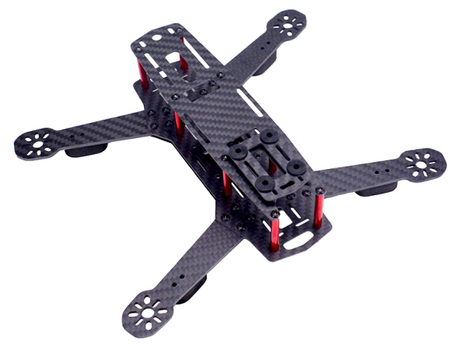
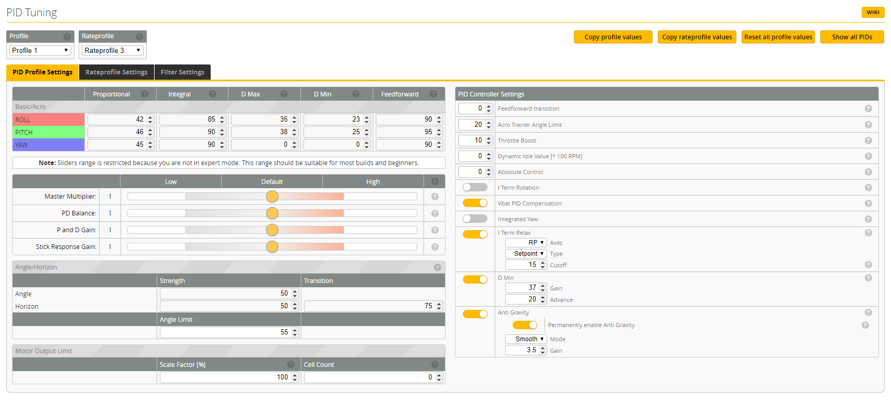
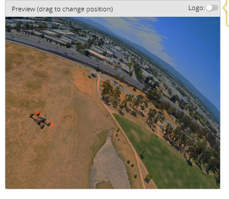
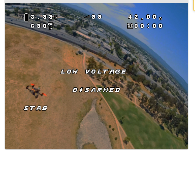

I started this project as an undergraduate to establish some practical experience with flying. A quadcopter was chosen over other RC aircraft because most builds were plug & play and I expected learning to fly multi-rotors was easier and more forgiving.
This drone differs from traditional consumer drones in its agility, modularity, and reliance on the pilot's skill. The learning curve for flying First-Person-View drones is steep, and the inevitability of crashes mean that robust components are absolutely critical. Below, I touch on the components I selected, which ones met expectations, and which ones didn't.
All the essential components of a race course to practice fast flying.
How is it Different? What's the Same?
The Role of Ready-to-Fly Drones
Extraordinary agility and speed set racing drones apart from ready-to-fly drones on the market. In terms of hardware, a racing drone is nearly identical to most drones on the market. Each has 4 motors with individual speed controllers, a flight computer with a MEMS gyroscope, a camera, and a receiver to pick up commands from the operator. More than likely, drones such as the DJI Mavic and the Parrot Anafi are physically capable of performing aggressive turns, split-S's, and back flips, but restrict the control to execute such maneuvers.
Ready-to-fly drones sacrifice the majority of their performance capability in exchange for safety and ease of operation. DJI drones have impressively capable auto-level and position hold functionality as a standard and have been incorporating computer vision for target following and auto-landing. However, they don't allow operators to do much else. Fundamentally, their role is to provide access to aerial photography to a wider audience.
The DJI Mavic 2 Pro. (Source: dronerush.com)
Racing Drones
My racing drone
The only control this racing drone uses is a set of PID controllers and feed-forward gains to mix the operator stick inputs. It is completely unrestrained, thus relying on operator experience to navigate a course and avoid obstacles. However, the full potential of the hardware is at the disposal of the pilot.
The Build
Requirements
Modular, yet robust construction to reduce effects of crashing
Sufficient power to weight ratio to perform acrobatic maneuvers
Reliable transmitter-receiver communication link and FPV system with On-Screen-Display
Frame
The frame should always be the first component to select as it constrains the options for several other parts. Carbon fiber frames are sturdy for their weight and come with pre-drilled mounting holes, making them the superior choice. I settled on a popular 250mm frame that had plenty of space for electronics, but later switched to another 250mm frame when the first was showing its age.

The first frame
The frame of the current build
The first frame saw a good number of crashes since it was the frame that I learned to fly on. For most crashes, if a part broke, it was either a propeller breaking or an electrical connection coming undone. Over time, the tips of the arms began to delaminate. In addition, one bad crash bent one of the arms. I fixed both of these issues by forcing superglue between the delaminated layers, then applying pressure to the area with a vice grip.
After enough wear, the drone began behaving erratically, twitching in the yaw direction. Initially, I checked that the propellers were tightened, then retuned the PID controller, but to no avail. After some more diagnosing, I determined that the wear on the frame and motors from crashing was inducing vibrations that were being picked up by the gyroscope. The flight controller would try to correct for these vibrations and exhibit this erratic behavior. The appropriate fix to this problem was to soft-mount the flight controller with rubber standoffs to damp out the vibrations.
The current build uses the second frame which was cut from thicker sheets of carbon fiber.
Props, motors, and ESCs
The size of the frame determines how big the propellers, motors, and electronic speed controllers (ESCs) need to be. I chose 3-bladed 5" propellers because they tend to provide more 'traction' for rounding tight corners than 2-bladed propellers. Next, I consulted the racing drone community to match my propeller selection to appropriate motors, ESCs, and batteries.
These components were most susceptible to being damaged in crashes because they are the most exposed. Motors and propellers are the biggest sources of vibrations on the drone and need to be replaced sometimes. Propellers are easy and cheap to replace once they are bent or broken, but motors and ESCs are more involved because they require the soldering iron.
Of all the upgrades to the drone, switching to a 4 cell battery (14.8 V nominal) gave the most noticeable improvement in performance. 3 cell batteries (11.1 V nominal) made the throttle response feel sluggish when compared to the 4 cell batteries.
Electronics
The FPV system, flight controller, and transmitter/receiver can be selected independently of the rest of the build because there is little interfacing between those systems. The FPV system consists of a camera and video transmitter on the drone, in addition to a video receiver on the ground with the pilot. The only requirement for this system is that it provides clear, low-latency video anywhere the drone goes.
Of the dozens of flight controllers on the market, I used the J Bardwell f4 All-In-One for its abundance of features and clean layout. It interfaces with the Betaflight Firmware Configurator seamlessly which lets me update the firmware, calibrate the accelerometer and gyroscope, tune the rates and PID controllers, arrange the On-Screen-Display, and bind switches on my transmitter to different flight modes (Arm, Acro, Auto-Level, etc.).

The rates and PID tuning page in Betaflight makes it easy to adjust how the drone handles in the air

The video feed without the On-Screen-Display

The video feed with the On-Screen-Display, showing useful data about the flight in real time
Building the Racing Gates (Webpage Under Maintenance)